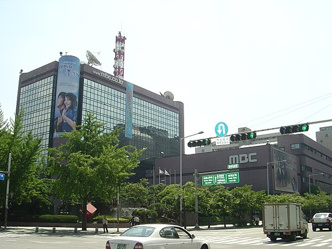
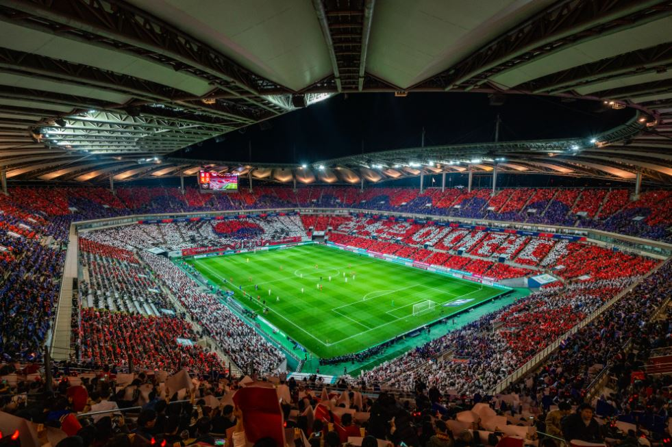
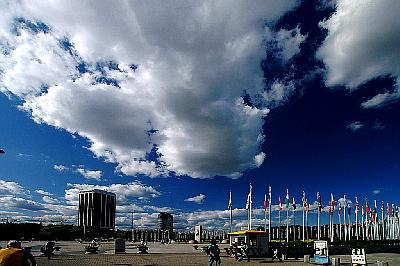
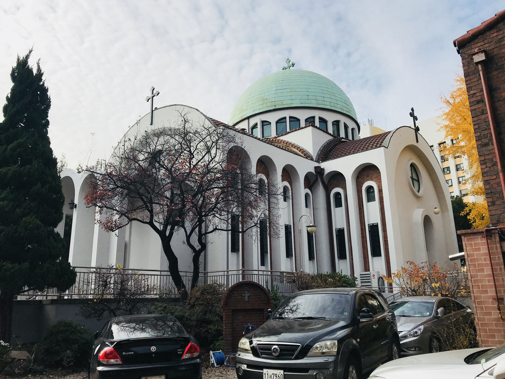
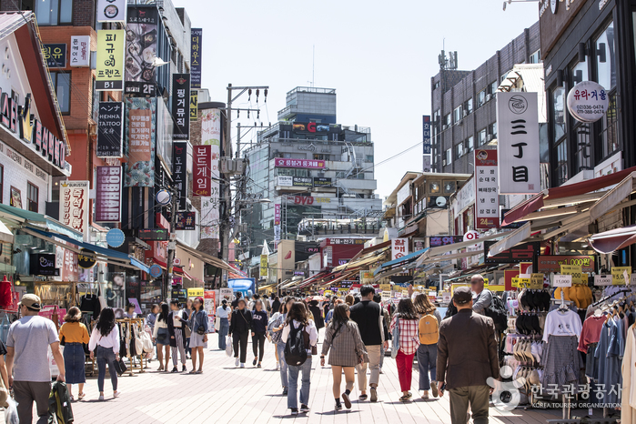
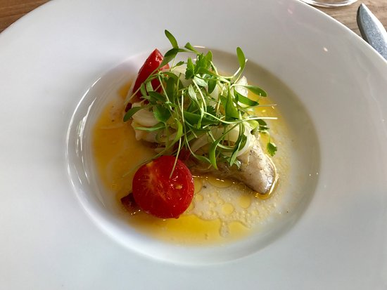
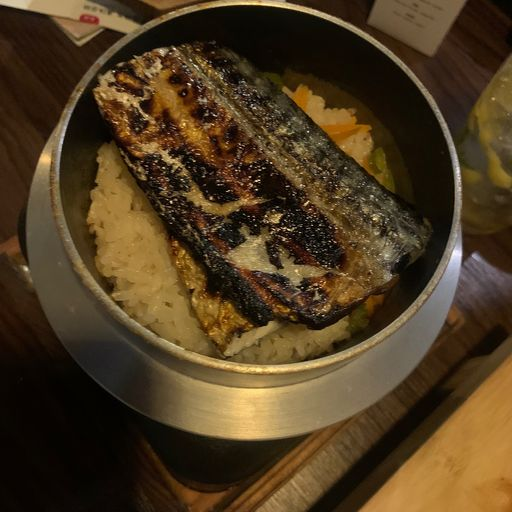
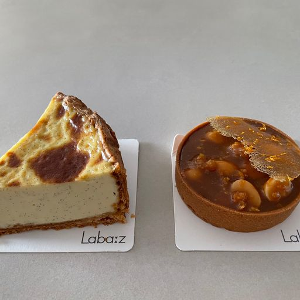

mbc사옥대한민국 수도권 지역을 가시청권으로 하는 지상파 TV·라디오 방송사로, 준공영방송이다. 1961년에 설립했으며, 본사 사옥은 서울특별시 마포구 상암동 디지털미디어시티에 위치한다. 평점 4.29/5 |
 |
서울월드컵경기장서울특별시 마포구 성산동에 위치한 축구장. 2002 FIFA 월드컵 한국·일본을 위해 건설된 아시아에서 2번째 규모의 축구 전용구장이며, 현재 대한민국 축구 국가대표팀과 K리그1 FC 서울의 홈구장으로 사용되고 있다. 평점 4.18/5 |
 |
월드컵공원서울특별시 마포구 상암동과 성산동 일원에 2002 FIFA 월드컵 한국/일본을 기념하여 조성된 공원이다. 올림픽공원(송파구), 서울숲(성동구), 북서울 꿈의 숲(강북구)과 함께 서울의 대표적인 공원이다. 평점 4.3/5 |
 |
서울 성 니콜라스 대성당1968년에 지어진 정교회 한국대교구의 본산이며 주교좌성당 지위를 가진 대성당. 이 대성당은 서울 시내 유일한 정교회 본당이다 평점 - |
 |
홍대거리홍익대학교, 홍대입구역, 상수역 일대에 위치한 대형 상권 특색 있는 상권이 유지되는 서교동, 상수동 상권 또는 국내 인디씬을 흔히 홍대 앞이라고 칭하다 홍대거리라는 명칭으로 정착되었다. 평점 - |
 |
쉐시몽서울특별시 마포구 월드컵로10길 48 동궁빌딩 1F 추천메뉴 : 프랑스 코스요리 평점 4.8/5 |
 |
야키토리나루토서울특별시 마포구 독막로9길 26 추천메뉴 : 오마카세 평점 4.8/5 |
 |
라바즈서울특별시 마포구 월드컵로13길 19-23 2F 추천메뉴 : 유자 배 타르트 평점 4.7/5 |
 |